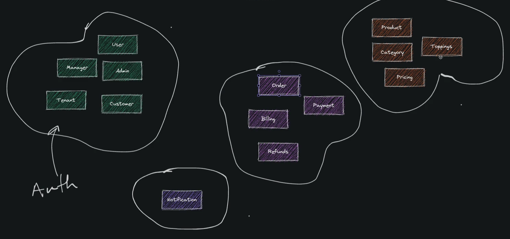
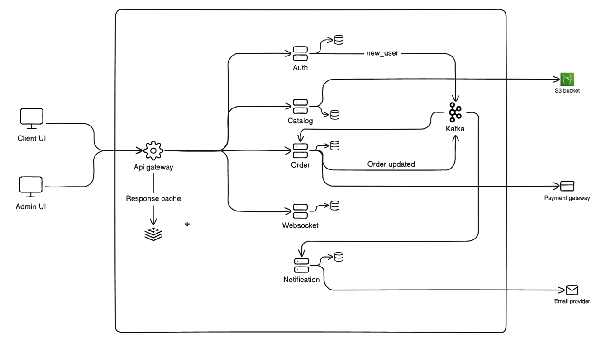

Small independent services that collectively form a larger application.
Top 3 Advantages of Microservices
Zero-Downtime Independent Deployability.
Reflect Your Team's Structure
Self-Contained Data & Logic
Zero-Downtime Independent Deployability.
Monolith application me sare features single folder k ander hote hain.
Solution : Different services for different feature and deploy them independently using microservices.
Monolith application me server ki scaling baar baar badhani hoti hai with time and requirement. Vertical scaling me hardware ki power hum badhate jate hain.
Solution :Horrizontal Scaling - load jaise hi badha hum naya server lete hain same configuration ka but wo naya machine hai. Same application ko naye wale server me bhi run krte hain. User aur 2 server k beech load balancer lgate hain. User ki request ko distribute kr dete hai 2 server me. kuch request jayegi 1st server pe and kuch 2nd pe.
Bookselling website ke example me maan lo Catalog wale feature me jada traffic/load hai aur OrderProcessing wale feature me kam. Vertical scaling me pure application ko ek sath scale krna hota hai.
Solution : Microservices se hum application ko different services me tod denge. Har service ko hum horizontal scaling kr skte hain. Ab agar catalog wale feature ka load jada lag rha to uske instance create kr k load balancer ka use krke hum proper scaling kr skte hain. Ise hi khenge Independent Deployability.
Zero-Downtime meaning new version deploy krte hain to kuch tool ka use krke automatically switch krte hain purane se naye version me.
Reflect Your Team's Structure
Team k structure k according different team member ko different microservice ki responsibilty de dene se conficts kam honge aur cicd pipeline me bhi toda kam load hoga.
Self-Contained Data & Logic
Infrastructure complexity
Latency
Risk of failure cascades
Defination
Microservices shouldn't be the default option. If you think a service architecture could help, try it with one of the modules from a very simple monolith topology and let it evolve from there. -Sam Newman
Planning Microservice Architecture

Microservice Architecture

Checklist or ToDo List
Checklist
Git setup
Node version managager setup
NodeJS project setup
TypeScript setup
Prettier setup
Eslint setup
Git hooks setup
Application config setup
ExpressJs app setup
Logger setup
Error handling setup
Tests setup
Create template
Git Setup
Adding .gitignore file
Add a gitignore vs code extension to automatically add a .gitignore to the project